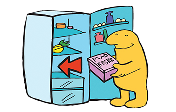

Hvad kan du gøre mod madspild?
Der er flere konkrete tiltag, man kan tage for at bekæmpe madspild i hverdagen.
- Planlæg dine måltider: Ved at lave en ugeplan for, hvad du vil spise, kan du købe præcis den mængde mad, du har brug for, og undgå impulskøb, som ofte ender i skraldespanden.
- Lav indkøbsliste: Skriv en liste over de ingredienser, du skal bruge, og køb kun det, der er nødvendigt. På den måde undgår du at købe for meget mad.
- Følg “først ind, først ud”-princippet: Sæt de ældste madvarer frem i skabet, så du bruger dem først. På den måde undgår du, at mad går til spilde, fordi det bliver glemt i baggrunden.
- Brug rester kreativt: Lær at bruge rester og overskudsmad til nye måltider. For eksempel kan overskydende grøntsager blive til en suppe, og rester af kød kan blive til fyld i en salat eller sandwich.
- Donér overskudsmad: Hvis du har mad, som du ikke når at spise, kan du overveje at donere det til velgørenhed eller give det væk til nogen, der har brug for det.
- Vær opmærksom på datomærkninger: Mange mennesker smider mad ud, når datoen på pakken er overskredet, selvom maden stadig kan være god. "Bedst før" betyder ikke nødvendigvis, at maden er dårlig, og mange produkter kan bruges i længere tid, hvis de opbevares korrekt.
- Brug apps og tilbud: Der er apps som "Too Good To Go", hvor du kan købe overskydende mad fra butikker og restauranter til en reduceret pris. Dette giver både mulighed for at spare penge og reducere madspild.
- Opmærksomhed på portioner: Undgå at lave for store portioner. Hvis du laver for meget mad, kan du altid gemme det til senere. Det er lettere at opvarme rester end at smide dem ud.
